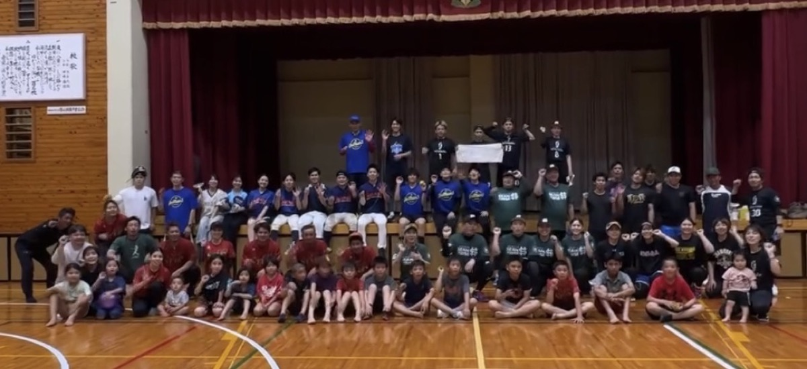
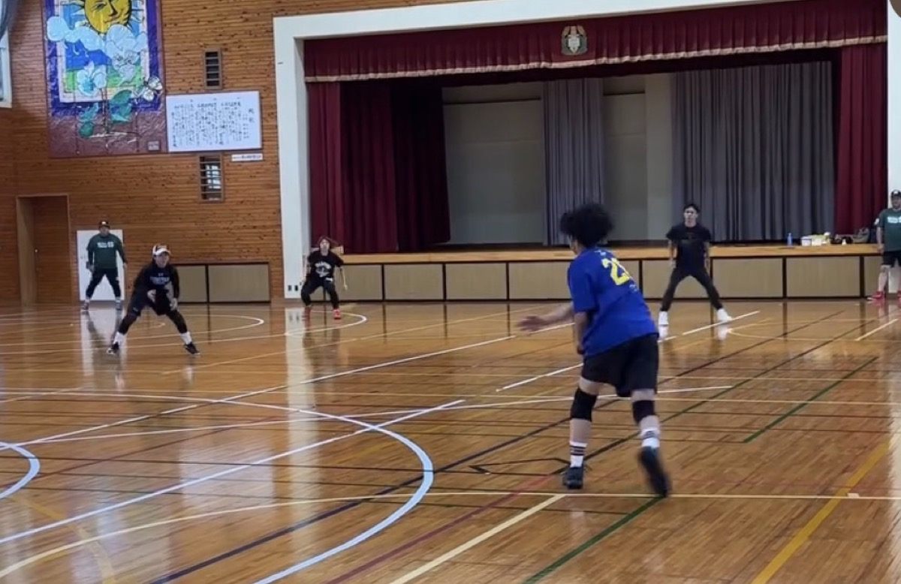
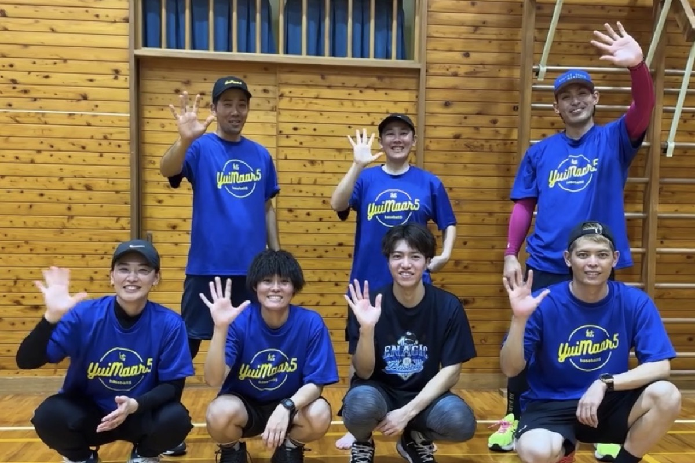

Afterword
大会のあとがき
第1回沖縄ベースボールファイブ大会が南城市内の体育館で行われました。
初の取り組みで、沖縄大学さんの優勝で幕を閉じ、多くの方の支えがあり大会を無事に終えることができました。

参加チーム
- 琉球シーホース
- 沖縄シーホース
- 沖縄大学
- R3メンバー
- 馬天バスターズ
- 結マール5
土曜日というお忙しい日程の中、大会を盛り上げていただき本当にありがとうございました。


また、大会の優勝賞金としてご協賛いただきました。
- おそうじ福丸様
- ノーサイン野球 神田大輝様
- 一般社団法人ごやすけ様
- 地酒と海鮮四四一六様
- 沖縄の浄化槽のことなら奥村興業様
協賛者様のおかげで大会が大変盛り上がりを見せました。
陰ながら、ベースボールファイブ大会を支えていただき本当にありがとうございました。
今後もベースボールファイブを通して、スポーツの魅力を伝える活動を続けていきます。
もちろん、大会を企画するからには優勝も目指して、ベースボールファイブのレベルも上達させながら普及活動を進めていきます。
今後ともよろしくお願いします。
改めまして、今大会無事に終えることができたこと、全ての方々に感謝。